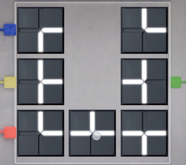
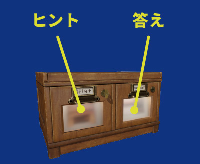
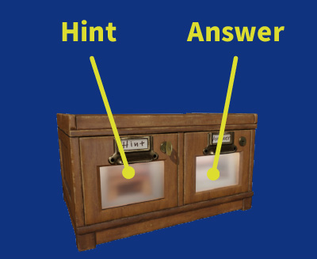
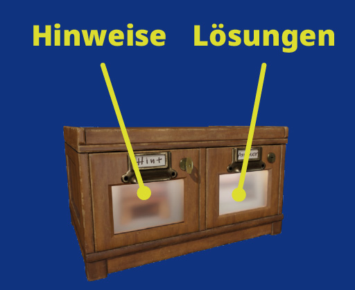
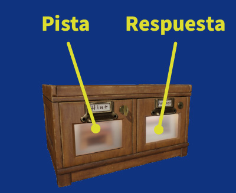
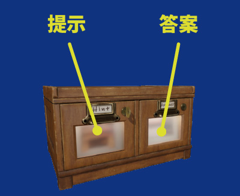
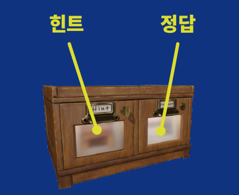
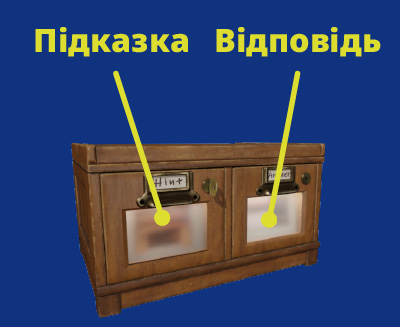
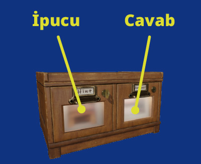
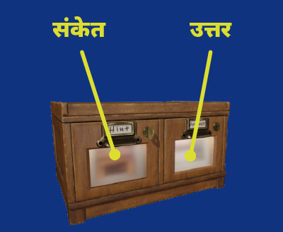

『路地裏からの脱出』 FAQ
脱出ゲーム『路地裏からの脱出』でよくいただくご質問をまとめました。
操作方法やヒントの見方で迷われたときの参考になれば幸いです。
※FAQの性質上、どうしてもネタバレがありますので、お困りのトピック以外は開かないようご注意ください。
ゲームの操作・謎解きについて
パネルをスライドさせるパズルが操作できなくなった
バグが原因です。大変申し訳ありません。
下図のように 空き枠が２か所 の状態になった場合は、 以下の手順で復旧し、セーブ済の地点からゲームを続行いただけます。

【手順】
- Google Play ストア または App Store からゲームを最新版にアップデート
- 「Load Game」でゲームを再開
- パズル下部に表示される「Reset」ボタンをタップ
釣り竿の使い方（飛行機をタップしても反応しない）
釣り竿の使用操作（樹上の飛行機をつつく）についてお問い合わせを多くいただいているため、短い動画を用意しました。
🎥 動画はこちら：
https://youtube.com/shorts/bS9Eg3MhhQY
動画と同じ操作をしても反応しない場合は、アイテムをドラッグ＆ドロップできない等の症状を、 お手数ですが問い合わせフォームにできるだけ詳しくご記載ください。
アイテムが使えない（反応しない）
アイテムはドラッグ＆ドロップで使用します。
画面下の青い帯に表示されているアイテムを、ゲーム画面内の目的の場所にドラッグ＆ドロップしてみてください。
（アイテムをドロップしたときに「ガッ！」と音がしたら当たり、ドロップしたときに「ピロピロッ！」と音がしたら外れです）
※アイテムの使い方などの操作説明は「？」印のプレートからも見ることができます。
スタート地点近くの木の幹と、銀色のポストの左側にあります。探してみてください。
飛行機を取るところで早送りしたらアイテムが（飛行機）無くなった
飛行機がどこかに飛んで行っています。付近を探してみてください。
机上の缶の並び替え
持ち上げた缶をすぐ隣の缶と入れ替えることで、並び替えを進めることができます。
- 缶をタップして持ち上げる
- 持ち上げた缶の隣の缶をタップする
謎の解き方がわからない（ヒントと答えの見方）
ヒントと答えを見るには、次の手順をお試しください。
- ゲーム画面右上の電球マークをタップ
- 左に「ヒント」、右に「答え」の引き出しがあります

まずは左の引き出しを開けて、ヒントをみてください。
その後、右の引き出し（答え）の窓が灯り、右の引き出しも開けられるようになります。
※ 引き出しの鍵は、ヒント画面右下の「広告を見る」ボタンから手に入ります。
（広告OFFアイテムを購入すると広告なしで引き出しの鍵を入手できるようになります）
望遠鏡の使い方
梯子を登った先で、ぼやけて見える風景に、望遠鏡をドラッグ＆ドロップしてみてください。
何かが起こります。
ふきんの使い方
ふきんをある場所で使うと、画面上にふきんが表示された状態になります。
その状態で、画面上のふきんに別のアイテムをドラッグ＆ドロップすると、何かが起こりますので、お試しください。
ネジ4本を外す操作
テンキーパッドの四隅にドライバーをドラッグアンドドロップしてみてください。
右上のネジは「緩んだ状態」、その他のネジは「外れた状態」になります（所持品のドライバーは消えます）。
バグ報告・ご意見フォームについて
ゲームプレイ中の不具合やご意見がありましたら、下記フォームからお知らせください。
個別に返信はできませんが、いただいた内容は端末ごとの検証や今後のアップデート改善に活かしてまいります。
Escape Game: The Hidden Alley – FAQ
Here you’ll find frequently asked questions about Escape Game: The Hidden Alley.
If you’re unsure about the controls or how to view hints and answers, please take a look here.
Because this is an FAQ, some answers contain spoilers. To avoid spoiling the puzzles, we recommend opening only the topics you’re currently stuck on.
Gameplay & puzzles
The slide puzzle won’t respond
This is caused by a bug. We’re very sorry.
If the puzzle ends up with two empty spaces as shown below, you can recover by following the steps below and continue from your saved progress.
【Steps】
- Update the game to the latest version from Google Play or the App Store.
- Resume the game via “Load Game”.
- Tap the “Reset” button shown below the puzzle.
Items don’t work / nothing happens
Items are used by drag & drop.
Try dragging an item from the blue bar at the bottom of the screen onto the place
where you want to use it in the game.
If you hear a solid “clunk!” sound when you drop it, that means you’re correct.
A light “pip-pip!” sound means the item doesn’t go there.
You can also check the basic controls (including how to use items) from the plate marked with a “?”.
You can find these plates on the tree trunk near the starting point, and on the left side of the silver mailbox. Please look around that area.
The paper glider item disappeared when I fast-forwarded
The paper glider flies off to a nearby spot. Please look carefully around the area — it has fallen somewhere close by.
How do I rearrange the cans on the desk?
You can rearrange the cans by swapping a lifted can with the one right next to it.
- Tap a can to lift it.
- Then tap the adjacent can to swap their positions.
I don’t know how to solve a puzzle (how to see hints and answers)
To view hints and answers, please try the steps below:
- Tap the light-bulb icon at the top-right of the game screen.
- You’ll see two drawers: “Hint” on the left, and “Answer” on the right.

Please open the left drawer first and read the hint.
After that, the window on the right (Answer) will light up, and you’ll be able to open the answer drawer as well.
Notes: You can obtain keys for the drawers via the “Watch Ad” button at the bottom-right of the hint screen. If you purchase the Remove Ads item, you’ll be able to get keys without watching ads.
How do I use the telescope?
After climbing the ladder, drag & drop the telescope onto the blurry scenery you see in the distance.
Something will happen.
How do I use the cloth?
If you use the cloth in a certain spot, a large cloth will appear over the screen.
While the cloth is showing, try dragging & dropping another item onto it. Something will happen, so please give it a try.
How do I remove the four screws?
Try dragging and dropping the screwdriver onto each of the four corners of the keypad.
The top-right screw will be left in a “loosened” state, and the other screws will be “removed”. (The screwdriver item will disappear from your inventory.)
How do I use the fishing rod?
We’ve received many questions about how to operate the fishing rod, so we’ve prepared a short video.
🎥 Watch the video here:
https://youtube.com/shorts/bS9Eg3MhhQY
If the game still doesn’t react even when you perform the same actions as in the video (for example, if you can’t drag & drop items), please let us know via the contact form and describe your situation in as much detail as possible.
Can I stream or upload gameplay videos?
Yes — you’re very welcome to stream or create videos.
Please read our streaming guidelines in advance.
If you have any questions about streaming, feel free to contact us via email (contact form) or direct message on our official X account.
About the bug report / feedback form
If you find any issues while playing, or have feedback you’d like to share,
please use the form below.
We’re not able to reply to each submission individually, but we use all reports
to help us test devices and improve future updates.
Escape Room Game Ruelle Cachée – FAQ
Voici les questions les plus fréquemment posées concernant
Escape Room Game Ruelle Cachée.
Si vous avez besoin d’aide pour les contrôles ou la consultation des indices et solutions,
veuillez consulter cette page.
Certains contenus peuvent contenir des informations liées aux énigmes. Pour éviter les spoilers, nous vous conseillons d’ouvrir uniquement les sections correspondant à l’endroit où vous êtes bloqué(e).
Jeu & énigmes
Le puzzle coulissant ne répond plus
Cela est dû à un bug. Nous sommes désolés.
Si vous voyez deux cases vides comme sur l’image ci-dessous, suivez les étapes ci-dessous pour rétablir la situation et reprendre à partir de votre sauvegarde.
【Étapes】
- Mettez le jeu à jour vers la dernière version depuis Google Play ou l’App Store.
- Reprenez la partie via « Load Game ».
- Appuyez sur le bouton « Reset » affiché sous le puzzle.
Un objet ne fonctionne pas / aucune réaction
Les objets s’utilisent par glisser-déposer (drag & drop).
Essayez de faire glisser un objet de la barre bleue en bas de l’écran vers
l’endroit où vous souhaitez l’utiliser.
Si vous entendez un « clac ! », c’est le bon endroit.
Un son plus léger signifie que ce n’est pas correct.
Le panneau « ? » contient aussi un rappel des contrôles. Vous pouvez en trouver près du point de départ et à gauche de la boîte aux lettres argentée.
L’avion en papier a disparu après un passage rapide
Il ne disparaît pas : il tombe quelque part juste à côté. Cherchez bien dans les environs.
Réorganisation des canettes sur le bureau
Soulevez une canette puis touchez celle située juste à côté pour échanger leurs positions.
Je ne trouve pas la solution (indices / réponses)
Essayez la procédure suivante :
- Appuyer sur l’icône d’ampoule en haut à droite
- Onglet de gauche = indice / onglet de droite = réponse
Les réponses nécessitent d’obtenir une clé via le bouton « Regarder une publicité ». Si vous achetez l’option « Supprimer les pubs », vous pourrez obtenir les clés sans publicité.
Comment utiliser le télescope ?
Après avoir grimpé à l’échelle, utilisez le télescope sur la zone floue au loin. Quelque chose se produira.
Comment utiliser le chiffon ?
S’il est utilisé au bon endroit, un grand chiffon recouvre l’écran. Essayez d’y glisser un autre objet.
Comment enlever les quatre vis ?
Glissez le tournevis sur les quatre coins du clavier numérique.
Une des vis restera légèrement desserrée, et les autres tomberont.
La canne à pêche
Nous avons préparé une courte vidéo explicative.
🎥 Vidéo ici :
https://youtube.com/shorts/bS9Eg3MhhQY
Puis-je streamer ou publier des vidéos ?
Oui ! Vous êtes les bienvenu(e)s à partager vos vidéos de gameplay.
Merci de consulter d’abord nos directives de diffusion.
Signaler un bug / Envoyer un avis
Si vous rencontrez un problème ou souhaitez faire une suggestion,
merci d’utiliser le formulaire ci-dessous.
Nous ne pouvons pas répondre à chaque message individuellement,
mais toutes les remarques nous aident à améliorer le jeu.
Escape Room Game HINTERGASSE – FAQ
Hier finden Sie häufig gestellte Fragen zu
Escape Room Game HINTERGASSE.
Wenn Sie Fragen zu Bedienung, Hinweisen oder Lösungen haben,
hilft Ihnen diese Seite weiter.
Einige Antworten enthalten Spoiler. Öffnen Sie bitte nur die Themen, bei denen Sie gerade nicht weiterkommen.
Spiel & Rätsel
Das Schiebepuzzle reagiert nicht mehr
Dies wird durch einen Bug verursacht. Es tut uns sehr leid.
Wenn – wie unten gezeigt – zwei leere Felder entstehen, können Sie das Problem mit den folgenden Schritten beheben und ab Ihrem Spielstand fortsetzen.
【Schritte】
- Aktualisieren Sie das Spiel auf die neueste Version über Google Play oder den App Store.
- Starten Sie das Spiel über „Load Game“ erneut.
- Tippen Sie auf die Schaltfläche „Reset“ unter dem Puzzle.
Gegenstand funktioniert nicht / keine Reaktion
Gegenstände werden per Drag & Drop verwendet.
Ziehen Sie einen Gegenstand aus der blauen Leiste unten an die gewünschte Stelle.
Ein „Klack!“ bedeutet richtig, ein leichter Ton bedeutet falsch.
Eine Übersicht über die Steuerung finden Sie auch auf den Schildern mit „?“ in der Nähe des Startpunkts und links vom silbernen Briefkasten.
Das Papierflugzeug ist verschwunden
Es landet ganz in der Nähe. Bitte suchen Sie genau nach.
Getränkedosen neu anordnen
Dose anheben → benachbarte Dose antippen → beide tauschen die Position.
Hinweise & Lösungen ansehen
So geht’s:
- Glühbirnen-Symbol oben rechts antippen
- Links = Hinweis / Rechts = Lösung

Lösungen benötigen einen Schlüssel, den Sie über die Werbung freischalten können. Mit „Werbung entfernen“ geht es ohne Werbung.
Fernrohr verwenden
Oben auf der Leiter – Fernrohr auf den verschwommenen Bereich richten.
Tuch verwenden
Am richtigen Ort wird das Tuch groß angezeigt. Dann anderen Gegenstand darauf ziehen.
Vier Schrauben entfernen
Schraubendreher auf alle vier Ecken des Keypads ziehen.
Eine Schraube bleibt locker, die anderen fallen heraus.
Darf ich streamen?
Ja — Streaming und Video-Uploads sind erlaubt!
Bitte vorher unsere Streaming-Richtlinien lesen.
Bug melden / Feedback geben
Wenn Probleme auftreten oder Sie Vorschläge haben, verwenden Sie bitte das Formular unten.
Rückmeldungen helfen uns sehr bei zukünftigen Verbesserungen.
Escape Game Callejón Secreto – Preguntas frecuentes
Aquí encontrarás respuestas a las preguntas más comunes sobre
Escape Game Callejón Secreto.
Si no sabes cómo usar un objeto o ver pistas y respuestas, revisa esta página.
Algunas respuestas pueden contener información de los puzles. Para evitar spoilers, abre solo el tema donde estés atascado.
Juego y puzles
El rompecabezas deslizante no responde
Esto se debe a un error. Lo sentimos mucho.
Si el rompecabezas queda con dos espacios vacíos como en la imagen, puedes recuperarlo siguiendo los pasos y continuar desde tu partida guardada.
【Pasos】
- Actualiza el juego a la última versión desde Google Play o la App Store.
- Reanuda el juego con “Load Game”.
- Toca el botón “Reset” que aparece debajo del rompecabezas.
Un objeto no funciona / no hay reacción
Los objetos se usan arrastrando y soltando (drag & drop).
Arrastra un objeto desde la barra azul inferior hacia la zona donde quieras usarlo.
Si suena un “¡clack!”, es el lugar correcto.
Un sonido ligero significa que ese no es el sitio.
También puedes comprobar los controles en los carteles con “?” cerca del inicio y a la izquierda del buzón plateado.
El avión de papel desapareció
No desaparece: cae en algún lugar cercano. Búscalo con atención.
Cómo reorganizar las latas
Toca una lata para levantarla, luego toca la de al lado para intercambiar su posición.
No sé cómo resolver el puzle (pistas / respuestas)
Sigue estos pasos:
- Toca el icono de bombilla arriba a la derecha
- Izquierda = pista / Derecha = respuesta

Para ver respuestas, necesitas una llave obtenida al ver un anuncio. Si compras «Eliminar anuncios», podrás conseguir llaves sin publicidad.
Cómo usar el telescopio
Tras subir la escalera, úsalo sobre el paisaje borroso del fondo.
Cómo usar el paño
Si se usa en el lugar correcto, aparece un paño grande en la pantalla. Arrastra otro objeto encima.
Cómo retirar los cuatro tornillos
Arrastra el destornillador a cada esquina del teclado numérico.
Un tornillo queda flojo y los demás se retiran.
Caña de pescar
Hemos preparado un breve video explicativo:
¿Puedo hacer streaming o publicar videos?
¡Sí! Se permite transmitir y compartir contenido del juego.
Consulta primero nuestras directrices de streaming.
Reporte de errores y comentarios
Si encuentras un problema o tienes sugerencias,
utiliza el siguiente formulario.
No podemos responder individualmente, pero todo el feedback ayuda a mejorar el juego.
《從巷弄中逃出》常見問題（FAQ）
這裡整理了關於逃脫遊戲《從巷弄中逃出》的常見問題。
當你不確定操作方式，或不知道怎麼查看提示／答案時，可以參考本頁內容。
由於 FAQ 的性質，內容難免會包含解謎相關的提示。
若不想被劇透，建議只打開自己卡關的項目。
遊戲操作與解謎
滑動拼圖無法操作
這是由於 Bug 造成的。非常抱歉。
若如下圖所示出現 兩個空格 的狀態， 請依照以下步驟復原，並可從已儲存的進度繼續遊玩。
【步驟】
- 請在 Google Play 或 App Store 將遊戲更新至最新版本
- 透過「Load Game」重新開始遊戲
- 點擊拼圖下方顯示的「Reset」按鈕
道具無法使用（沒有反應）
道具需要透過拖曳（Drag & Drop）來使用。
請把畫面下方藍色欄位中的道具，拖曳到遊戲畫面中想使用的地方。
若放下時聽到「咔！」的一聲，代表位置正確；若是輕快的「叮叮～」聲，
則表示這裡不能使用。
道具的使用方式等操作說明，也可以從標有「？」的牌子查看。
牌子位於起點附近的樹幹，以及銀色郵筒左邊的位置，請在附近找找看。
在拿飛機的地方快轉後，道具（飛機）不見了
紙飛機會飛到附近的某個地方。請仔細在周圍找找看，其實就掉在不遠處。
桌上的罐子要怎麼重新排列？
將拿起來的罐子與緊鄰的罐子交換位置，就能慢慢完成排序。
- 點一下罐子，讓它被舉起。
- 再點擊旁邊的罐子，就會和手上的罐子交換位置。
看不懂謎題怎麼解（提示與答案的查看方式）
若想查看提示或答案，請依照以下步驟操作：
- 點擊遊戲畫面右上角的燈泡圖示。
- 畫面會出現兩個抽屜：左邊是「提示」，右邊是「答案」。

請先打開左邊的抽屜，看看提示內容。
之後右邊（答案）那一側的窗格會亮起，就可以打開答案的抽屜。
※ 抽屜的鑰匙可以從提示畫面右下方的「觀看廣告」按鈕取得。
若購買了「移除廣告」道具，就能在不看廣告的情況下獲得鑰匙。
望遠鏡怎麼用？
爬上梯子之後，將望遠鏡拖曳到遠方模糊的景色上試試看，會有些變化發生。
抹布怎麼用？
在某個地方使用抹布後，畫面上會顯示一塊放大的抹布。
在抹布顯示的狀態下，把其他道具拖曳到抹布上，就會發生一些事情，請試試看。
四顆螺絲要怎麼拆？
請試著把螺絲起子拖曳到數字鍵盤的四個角落。
右上角的螺絲會變成「鬆開但還留著」的狀態， 其他三顆則會「被拆下來」（道具欄中的螺絲起子會消失）。
釣竿的使用方式
由於收到不少關於釣竿操作的詢問，我們另行準備了一支簡短的示範影片。
🎥 影片連結：
https://youtube.com/shorts/bS9Eg3MhhQY
如果照著影片中的操作，遊戲仍然沒有反應（例如道具無法拖曳）等情況，
麻煩在回報表單中盡量詳細描述你的狀況。
關於錯誤回報／意見表單
如果在遊戲中遇到問題，或有任何建議，歡迎透過下方表單告訴我們。
我們無法一一回覆，但所有回饋都會用於不同裝置的測試，以及未來更新的改善。
《從巷弄中逃出》常見問題（FAQ）
這裡整理了關於逃脫遊戲《從巷弄中逃出》的常見問題。
當你不確定操作方式，或不知道怎麼查看提示／答案時，可以參考本頁內容。
因為 FAQ 難免包含解謎相關的提示，
若不想被劇透，建議只打開自己卡關的項目。
遊戲操作與解謎
道具無法使用（沒有反應）
道具需要透過拖曳（Drag & Drop）來使用。
請把畫面下方藍色欄位中的道具，拖曳到遊戲畫面中想使用的地方。
若放下時聽到「咔！」的一聲，代表位置正確；若是輕快的「叮叮～」聲，
則表示這裡不能使用。
道具的使用方式等操作說明，也可以從標有「？」的牌子查看。
牌子位於起點附近的樹幹，以及銀色郵筒左邊的位置，請在附近找找看。
滑動拼圖無法操作
這是由於 Bug 造成的。非常抱歉。
若如下圖所示出現 兩個空格 的狀態， 請依照以下步驟復原，並可從已儲存的進度繼續遊玩。
【步驟】
- 請至 Google Play 或 App Store 將遊戲更新到最新版本
- 透過「Load Game」繼續遊戲
- 點擊拼圖下方顯示的「Reset」按鈕
在拿飛機的地方快轉後，道具（飛機）不見了
紙飛機會飛到附近的某個地方。請仔細在周圍找找看，其實就掉在不遠處。
桌上的罐子要怎麼重新排列？
將拿起來的罐子與緊鄰的罐子交換位置，就能慢慢完成排序。
- 點一下罐子，讓它被舉起。
- 再點擊旁邊的罐子，就會和手上的罐子交換位置。
看不懂謎題怎麼解（提示與答案的查看方式）
若想查看提示或答案，請依照以下步驟操作：
- 點擊遊戲畫面右上角的燈泡圖示。
- 畫面會出現兩個抽屜：左邊是「提示」，右邊是「答案」。
請先打開左邊的抽屜，看看提示內容。
之後右邊（答案）那一側的窗格會亮起，就可以打開答案的抽屜。
※ 抽屜的鑰匙可以從提示畫面右下方的「觀看廣告」按鈕取得。
若購買了「移除廣告」道具，就能在不看廣告的情況下獲得鑰匙。
望遠鏡怎麼用？
爬上梯子之後，將望遠鏡拖曳到遠方模糊的景色上試試看，會有些變化發生。
抹布怎麼用？
在某個地方使用抹布後，畫面上會顯示一塊放大的抹布。
在抹布顯示的狀態下，把其他道具拖曳到抹布上，就會發生一些事情，請試試看。
四顆螺絲要怎麼拆？
請試著把螺絲起子拖曳到數字鍵盤的四個角落。
右上角的螺絲會變成「鬆開但還留著」的狀態， 其他三顆則會「被拆下來」（道具欄中的螺絲起子會消失）。
釣竿的使用方式
由於收到不少關於釣竿操作的詢問，我們另行準備了一支簡短的示範影片。
🎥 影片連結：
https://youtube.com/shorts/bS9Eg3MhhQY
如果照著影片中的操作，遊戲仍然沒有反應（例如道具無法拖曳）等情況，
麻煩在回報表單中盡量詳細描述你的狀況。
關於錯誤回報／意見表單
如果在遊戲中遇到問題，或有任何建議，歡迎透過下方表單告訴我們。
我們無法一一回覆，但所有回饋都會用於不同裝置的測試，以及未來更新的改善。
『골목길 탈출』 자주 묻는 질문 (FAQ)
탈출 게임 『골목길 탈출』을 플레이할 때 자주 받는 질문을 정리했습니다.
조작 방법이나 힌트・정답을 보는 방법이 궁금할 때 참고해 주세요.
FAQ 특성상 일부 답변에는 스포일러가 포함될 수 있습니다.
스포일러를 피하고 싶으신 분은, 막힌 부분만 열어 보시는 것을 추천드립니다.
게임 조작 및 퍼즐 관련
슬라이드 퍼즐이 작동하지 않아요
버그로 인해 발생한 현상입니다. 정말 죄송합니다.
아래 그림처럼 빈 칸이 2개가 된 경우, 다음 절차로 복구한 뒤 저장된 지점에서 계속 플레이할 수 있습니다.
【절차】
- Google Play 또는 App Store에서 게임을 최신 버전으로 업데이트합니다.
- “Load Game”으로 게임을 다시 시작합니다.
- 퍼즐 아래에 표시되는 “Reset” 버튼을 탭합니다.
아이템이 사용되지 않아요 (반응이 없어요)
아이템은 드래그 앤 드롭으로 사용합니다.
화면 아래의 파란 바에 표시된 아이템을, 게임 화면 안에서 사용하고 싶은 위치로
드래그 앤 드롭해 보세요.
떨어뜨렸을 때 “꽉!” 하는 소리가 나면 정답 위치이고,
“띠리릭♪” 같은 가벼운 소리가 나면 그곳에는 사용할 수 없다는 의미입니다.
아이템 사용 방법 등 기본 조작 설명은 “?” 표시가 있는 안내판에서도 확인할 수 있습니다.
안내판은 시작 지점 근처의 나무 기둥과, 은색 우체통 왼쪽에 있습니다. 주변을 잘 찾아보세요.
비행기를 줍는 장면에서 빠르게 넘겼더니 아이템(비행기)이 사라졌어요
종이비행기가 근처 다른 곳으로 날아가 있습니다. 주변을 천천히 살펴보시면, 가까운 곳에 떨어져 있는 것을 찾을 수 있습니다.
책상 위 깡통을 어떻게 정렬하나요?
들어 올린 깡통을 바로 옆 깡통과 교체하면서 순서를 맞춰 나가는 퍼즐입니다.
- 깡통을 탭하여 들어 올립니다.
- 들어 올린 깡통의 옆에 있는 깡통을 탭하면, 두 깡통의 위치가 바뀝니다.
퍼즐을 어떻게 풀어야 할지 모르겠어요 (힌트와 정답 보는 법)
힌트와 정답을 보려면 아래 단계를 따라 주세요.
- 게임 화면 오른쪽 위의 전구 아이콘을 탭합니다.
- 왼쪽에는 “힌트”, 오른쪽에는 “정답” 서랍이 표시됩니다.

먼저 왼쪽 서랍을 열어 힌트를 확인해 보세요.
그 뒤에 오른쪽(정답) 쪽 창이 밝아지며, 정답 서랍도 열 수 있게 됩니다.
※ 서랍의 열쇠는 힌트 화면 오른쪽 아래의 “광고 보기” 버튼을 통해 얻을 수 있습니다.
광고 제거 아이템을 구매하시면 광고를 보지 않고도 열쇠를 받을 수 있습니다.
망원경 사용 방법
사다리를 올라간 뒤, 멀리 흐릿하게 보이는 풍경 위에 망원경을 드래그 앤 드롭해 보세요.
어떤 변화가 일어납니다.
행주의 사용 방법
특정 장소에서 행주를 사용하면, 화면 위에 큰 행주가 펼쳐진 상태가 됩니다.
그 상태에서 화면의 행주 위로 다른 아이템을 드래그 앤 드롭하면 무언가가 일어나니 꼭 시도해 보세요.
나사 4개를 어떻게 모두 풀어야 하나요?
숫자 키패드 네 모서리 각각에 드라이버를 드래그 앤 드롭해 보세요.
오른쪽 위 나사는 “느슨해진 상태”로 남고, 나머지 나사들은 “빠진 상태”가 됩니다. (소지품 목록의 드라이버는 사라집니다.)
낚싯대 사용 방법
낚싯대 조작에 대한 문의가 많아, 짧은 설명 영상을 준비했습니다.
🎥 영상 보기:
https://youtube.com/shorts/bS9Eg3MhhQY
영상과 똑같이 조작해도 반응이 없는 경우
(예: 아이템을 드래그 앤 드롭할 수 없다 등)에는,
문의 폼에 증상을 가능한 한 자세히 적어 보내 주시면 도움이 됩니다.
게임 영상을 녹화하거나 방송해도 되나요?
네, 플레이 영상 및 방송을 환영합니다.
먼저 영상・방송 가이드라인을 읽어 주세요.
방송에 대해 궁금한 점이 있으시면, 문의 메일(폼)이나 공식 X 계정 DM으로 연락해 주세요.
버그 신고・의견 폼에 대하여
플레이 중 문제가 발생했거나, 전하고 싶은 의견이 있으시다면
아래 폼을 통해 알려 주세요.
개별 회신은 어려우나, 모든 피드백은 기기별 검증과 향후 업데이트 개선에 적극 반영하고 있습니다.
Escape Room Таємний Провулок – FAQ
Тут зібрані найпоширеніші запитання про Escape Room Таємний Провулок.
Якщо ви не впевнені щодо керування або як переглянути підказки й відповіді — перегляньте цю сторінку.
Оскільки це FAQ, деякі відповіді містять спойлери. Щоб не зіпсувати враження, відкривайте лише ті теми, на яких ви зараз застрягли.
Геймплей і загадки
Пазл із пересуванням плиток не працює
Це спричинено помилкою. Нам дуже шкода.
Якщо, як на зображенні нижче, з’являються дві порожні клітинки, виконайте кроки нижче, щоб відновити роботу та продовжити з вашого збереження.
【Кроки】
- Оновіть гру до останньої версії в Google Play або App Store.
- Відновіть гру через “Load Game”.
- Натисніть кнопку “Reset”, що відображається під пазлом.
Предмет не працює / нічого не відбувається
Предмети використовуються перетягуванням (drag & drop).
Спробуйте перетягнути предмет із синьої панелі внизу екрана на місце,
де ви хочете його використати в грі.
Якщо під час відпускання ви чуєте чіткий «туп!» — це правильне місце.
Легкий звук означає, що предмет тут не використовується.
Базові підказки щодо керування (зокрема, як використовувати предмети) також можна переглянути на табличці з «?».
Такі таблички є біля стартової точки на стовбурі дерева, а також ліворуч від срібної поштової скриньки. Огляньте цю зону.
Паперовий планер зник після прискорення
Планер не зникає — він відлітає й падає десь поруч. Уважно огляньте місця навколо — він десь близько.
Як переставити банки на столі?
Банки можна впорядковувати, міняючи місцями підняту банку з сусідньою.
- Торкніться банки, щоб підняти її.
- Потім торкніться сусідньої банки, щоб поміняти їх місцями.
Не знаю, як розв’язати загадку (як переглянути підказки та відповіді)
Щоб переглянути підказки й відповіді, спробуйте так:
- Натисніть значок лампочки у верхньому правому куті ігрового екрана.
- З’являться дві шухляди: ліворуч — «Hint», праворуч — «Answer».

Спочатку відкрийте ліву шухляду та прочитайте підказку.
Після цього праве віконце (Answer) засвітиться, і ви зможете відкрити шухляду з відповіддю.
Примітка: ключі для шухляд можна отримати через кнопку «Watch Ad» внизу праворуч на екрані підказки. Якщо ви придбаєте «Remove Ads», ключі можна буде отримувати без перегляду реклами.
Як використовувати телескоп?
Після того як підніметеся драбиною, перетягніть телескоп на розмитий краєвид у далині.
Щось станеться.
Як використовувати ганчірку?
Якщо використати ганчірку в певному місці, велика ганчірка з’явиться поверх екрана.
Поки ганчірка відображається, спробуйте перетягнути на неї інший предмет. Щось станеться — спробуйте.
Як зняти чотири гвинти?
Спробуйте перетягнути викрутку на кожен із чотирьох кутів цифрової панелі.
Правий верхній гвинт залишиться «послабленим», а інші гвинти будуть «зняті». (Предмет «викрутка» зникне з інвентарю.)
Як користуватися вудкою?
Ми отримали багато запитань щодо керування вудкою, тому підготували коротке відео.
🎥 Дивіться відео:
https://youtube.com/shorts/bS9Eg3MhhQY
Якщо гра не реагує навіть при виконанні дій як у відео (наприклад, не вдається перетягувати предмети), будь ласка, повідомте через форму та опишіть ситуацію якомога детальніше.
Чи можна стрімити або завантажувати відео з проходженням?
Так — ви можете стрімити та публікувати відео.
Будь ласка, заздалегідь ознайомтеся з нашими правилами для стрімів.
Якщо маєте запитання щодо стрімів, звертайтеся через email (форму) або в приватні повідомлення нашого офіційного X.
Про форму для повідомлень про баги / відгуки
Якщо під час гри виникли проблеми або у вас є ідеї — скористайтеся формою нижче.
Ми не можемо відповідати на кожне повідомлення окремо, але всі звернення допомагають
у перевірці на різних пристроях і в покращенні майбутніх оновлень.
Escape Game Gizli Küçə – FAQ
Burada Escape Game Gizli Küçə haqqında tez-tez verilən sualları tapa bilərsiniz.
İdarəetmə, ipucu və cavabların necə açıldığını bilmirsinizsə, bu səhifəyə baxın.
Bu, FAQ olduğu üçün bəzi cavablarda spoyler ola bilər. Tapmacaları korlamamaq üçün yalnız ilişdiyiniz mövzunu açmağınızı tövsiyə edirik.
Oyun və tapmacalar
Sürüşdürmə pazlı işləmir
Bu, bir xətadan (bug) qaynaqlanır. Çox üzr istəyirik.
Aşağıdakı şəkildə olduğu kimi 2 boş xana yaranarsa, aşağıdakı addımları izləyərək bərpa edə və saxlanmış yerdən oyunu davam etdirə bilərsiniz.
【Addımlar】
- Oyunu Google Play və ya App Store üzərindən ən son versiyaya yeniləyin.
- “Load Game” ilə oyunu bərpa edin.
- Pazlın altında görünən “Reset” düyməsinə toxunun.
Əşya işləmir / heç nə baş vermir
Əşyalar sürüklə-burax (drag & drop) üsulu ilə istifadə olunur.
Ekranın aşağı hissəsindəki mavi paneldən bir əşyanı götürüb,
oyunda istifadə etmək istədiyiniz yerə sürükləyib buraxın.
Buraxanda sərt “taqq!” səsi eşidirsinizsə, doğru yerdir.
Yüngül səs isə həmin yerə uyğun olmadığını bildirir.
Əsas idarəetməni (əşyalardan istifadə daxil) “?” işarəli lövhədən də yoxlaya bilərsiniz.
Bu lövhələr start nöqtəsinə yaxın ağac kötüyündə və gümüş rəngli poçt qutusunun sol tərəfindədir. Həmin əraziyə baxın.
Kağız planer sürətlə keçəndən sonra yox oldu
Planer yox olmur — yaxınlığa uçub düşür. Ətrafı diqqətlə axtarın, bir yerdə yaxınlıqda olacaq.
Masadakı bankaları necə düzürəm?
Bankaları, qaldırdığınız bankanı yanındakı banka ilə yerini dəyişərək düzəldə bilərsiniz.
- Bankaya toxunub onu qaldırın.
- Sonra yanındakı bankaya toxunaraq yerlərini dəyişin.
Tapmacanı necə həll edəcəyimi bilmirəm (ipucu və cavablar)
İpucu və cavablara baxmaq üçün bunları edin:
- Oyun ekranının sağ yuxarısındakı lamp ikonuna toxunun.
- İki siyirmə görünəcək: solda “Hint”, sağda “Answer”.

Əvvəlcə sol siyirməni açıb ipucuna baxın.
Bundan sonra sağ tərəfdəki pəncərə (Answer) işıqlanacaq və cavab siyirməsini də aça biləcəksiniz.
Qeyd: Siyirmələrin açarı, ipucu ekranının sağ aşağısındakı “Watch Ad” düyməsi ilə əldə olunur. “Remove Ads” alsanız, açarı reklam izləmədən də ala bilərsiniz.
Teleskopdan necə istifadə olunur?
Nərdivanla yuxarı qalxdıqdan sonra, uzaqda bulanıq görünən mənzərənin üzərinə teleskopu sürükləyib buraxın.
Nəsə baş verəcək.
Parçadan (bez) necə istifadə olunur?
Müəyyən yerdə istifadə etdikdə, ekranda böyük parça görünür.
Parça görünən halda, başqa bir əşyanı onun üzərinə sürükləyib buraxın. Nəsə baş verəcək — sınayın.
Dörd vint necə çıxarılır?
Vint açanını rəqəm panelinin dörd küncünün hər birinə sürükləyib buraxın.
Sağ yuxarı vint “boşalmış” vəziyyətdə qalacaq, digərləri isə “çıxarılmış” olacaq. (Vint açanı inventardan yox olacaq.)
Balıq tutma çubuğu necə işləyir?
Balıq tutma çubuğunun idarəsi ilə bağlı çox sual aldığımız üçün qısa video hazırlamışıq.
🎥 Video:
https://youtube.com/shorts/bS9Eg3MhhQY
Videodakı kimi etsəniz də reaksiya yoxdursa (məsələn, əşyaları sürükləmək olmursa), zəhmət olmasa formadan yazın və vəziyyəti mümkün qədər detallı təsvir edin.
Oyun videosu paylaşmaq və ya yayım etmək olar?
Bəli — yayım etmək və video paylaşmaq olar.
Əvvəlcə yayım qaydaları səhifəmizə baxın.
Suallarınız olarsa, email (forma) və ya rəsmi X hesabımıza DM ilə yazın.
Xəta bildirişi / rəy forması haqqında
Oyun zamanı problem görsəniz və ya təklifiniz olsa, aşağıdakı formadan yazın.
Hər müraciətə ayrıca cavab verə bilmirik, amma bütün bildirişlər
cihaz testləri və gələcək yeniləmələr üçün çox faydalıdır.
Escape Room Game छुपी हुई गली – FAQ
यहाँ Escape Room Game छुपी हुई गली के बारे में अक्सर पूछे जाने वाले सवाल दिए गए हैं।
अगर आपको कंट्रोल या हिंट/आंसर देखने का तरीका समझ नहीं आ रहा है, तो यह पेज देखें।
यह FAQ है, इसलिए कुछ जवाबों में स्पॉइलर हो सकते हैं। बेहतर होगा कि आप सिर्फ उसी टॉपिक को खोलें जहाँ आप अटके हैं।
गेमप्ले और पहेलियाँ
स्लाइड पज़ल काम नहीं कर रहा है
यह एक बग के कारण हो रहा है। हमें बहुत खेद है।
यदि नीचे दिखाए गए अनुसार दो खाली जगहें बन जाती हैं, तो नीचे दिए गए चरणों से इसे ठीक करके आप सेव किए गए स्थान से खेल जारी रख सकते हैं।
【चरण】
- गेम को नवीनतम संस्करण में अपडेट करें: Google Play या App Store से।
- “Load Game” से गेम फिर से शुरू करें।
- पज़ल के नीचे दिख रहे “Reset” बटन पर टैप करें।
आइटम काम नहीं करता / कुछ नहीं होता
आइटम का उपयोग ड्रैग & ड्रॉप से होता है।
स्क्रीन के नीचे नीली बार में दिख रहे आइटम को पकड़कर,
गेम स्क्रीन में जिस जगह उपयोग करना है वहाँ ड्रैग करके छोड़ें।
छोड़ते समय अगर “ठक!” जैसी ठोस आवाज आए तो वह सही जगह है।
हल्की आवाज का मतलब है कि उस जगह नहीं लगेगा।
बेसिक कंट्रोल (आइटम कैसे इस्तेमाल करें, आदि) “?” वाले बोर्ड से भी देखे जा सकते हैं।
ये बोर्ड स्टार्ट के पास पेड़ के तने पर, और चाँदी वाले मेलबॉक्स के बाईं तरफ मिलेंगे। आसपास देखें।
फास्ट-फॉरवर्ड करने पर पेपर ग्लाइडर गायब हो गया
ग्लाइडर गायब नहीं होता — वह पास ही कहीं उड़कर गिर जाता है। आसपास ध्यान से देखें, वह कहीं नज़दीक ही मिलेगा।
टेबल पर रखी कैन्स कैसे क्रम में लगाएँ?
आप उठाई गई कैन को पास वाली कैन से बदलकर क्रम ठीक कर सकते हैं।
- कैन पर टैप करके उसे उठाएँ।
- फिर बगल वाली कैन पर टैप करें — दोनों की जगह बदल जाएगी।
समझ नहीं आ रहा (हिंट और आंसर कैसे देखें)
हिंट और आंसर देखने के लिए ये करें:
- गेम स्क्रीन के ऊपर-दाईं ओर बल्ब आइकन पर टैप करें।
- दो ड्रॉअर दिखेंगे: बाएँ “Hint”, दाएँ “Answer”。

पहले बाएँ ड्रॉअर को खोलकर हिंट देखें।
उसके बाद दाईं तरफ (Answer) की विंडो जल जाएगी, और आप आंसर ड्रॉअर भी खोल पाएँगे।
नोट: ड्रॉअर की चाबी, हिंट स्क्रीन के नीचे-दाईं ओर “Watch Ad” बटन से मिलती है। “Remove Ads” खरीदने पर आप बिना विज्ञापन देखे भी चाबी पा सकते हैं।
टेलिस्कोप कैसे इस्तेमाल करें?
सीढ़ी चढ़ने के बाद, दूर जो दृश्य धुंधला दिखता है उस पर टेलिस्कोप को ड्रैग & ड्रॉप करें।
कुछ होगा।
कपड़ा (क्लॉथ) कैसे इस्तेमाल करें?
किसी खास जगह पर इस्तेमाल करने पर स्क्रीन पर बड़ा कपड़ा दिखाई देता है।
जब कपड़ा दिख रहा हो, उस पर किसी दूसरे आइटम को ड्रैग & ड्रॉप करके देखें। कुछ होगा — ट्राई करें।
चार स्क्रू कैसे निकालें?
स्क्रूड्राइवर को कीपैड के चारों कोनों पर ड्रैग & ड्रॉप करके देखें।
ऊपर-दाईं वाला स्क्रू “ढीला” रहेगा, बाकी स्क्रू “निकले हुए” होंगे। (स्क्रूड्राइवर इन्वेंटरी से गायब हो जाएगा।)
फिशिंग रॉड कैसे इस्तेमाल करें?
फिशिंग रॉड के ऑपरेशन पर बहुत सवाल आते हैं, इसलिए हमने एक छोटा वीडियो बनाया है।
🎥 वीडियो यहाँ देखें:
https://youtube.com/shorts/bS9Eg3MhhQY
अगर वीडियो जैसा करने पर भी गेम रिएक्ट नहीं करता (जैसे आइटम ड्रैग & ड्रॉप न हो पाना), तो कृपया फॉर्म में स्थिति जितना हो सके उतना विस्तार से लिखें।
क्या मैं गेमप्ले वीडियो/स्ट्रीम कर सकता हूँ?
हाँ — आप स्ट्रीम या वीडियो अपलोड कर सकते हैं।
कृपया पहले हमारी स्ट्रीमिंग गाइडलाइन्स देख लें।
अगर कोई सवाल हो, तो ईमेल (फॉर्म) या आधिकारिक X पर DM करें।
बग रिपोर्ट / फीडबैक फॉर्म के बारे में
खेलते समय कोई समस्या मिले या आपके पास सुझाव हों, तो नीचे दिए गए फॉर्म का उपयोग करें।
हम हर संदेश का अलग-अलग जवाब नहीं दे पाते, लेकिन सभी रिपोर्ट्स
अलग-अलग डिवाइस पर जाँच और आगे के अपडेट सुधार में मदद करती हैं।